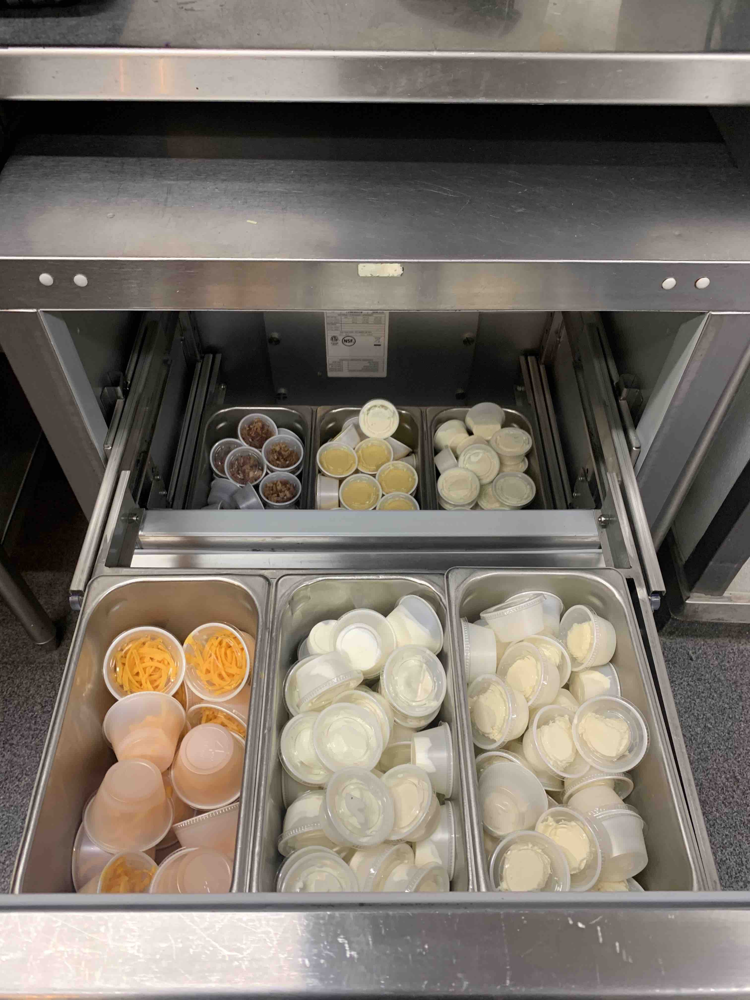
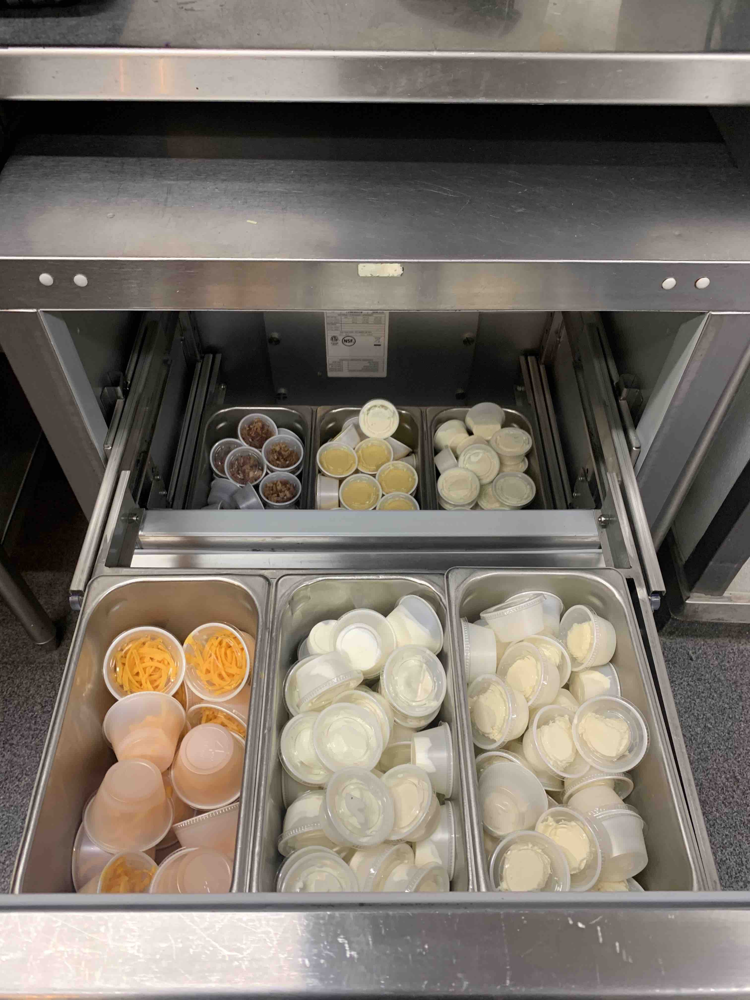
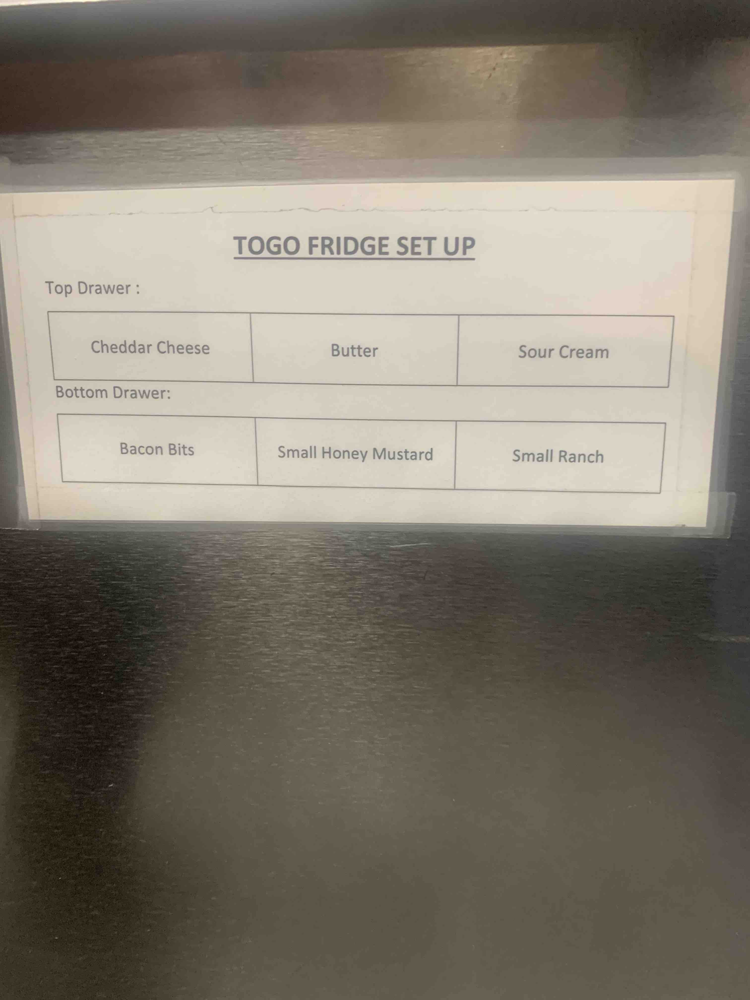
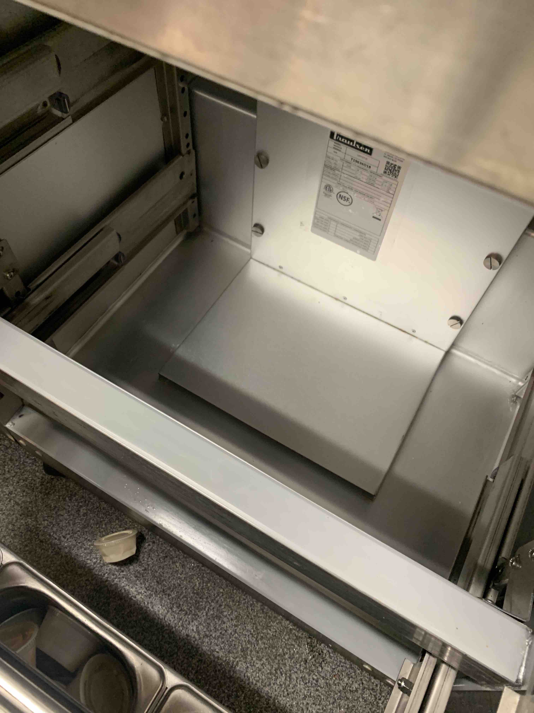

- First, there is a guide right on the fridge to follow:

- While stocking, you need to clean in all the gaskets and ensure that the bottom of the station is clean.
- Here is an example:

- (looks like a cup fell onto the floor when opening it, that is a result of overstocking. you don't have to go crazy with it!)